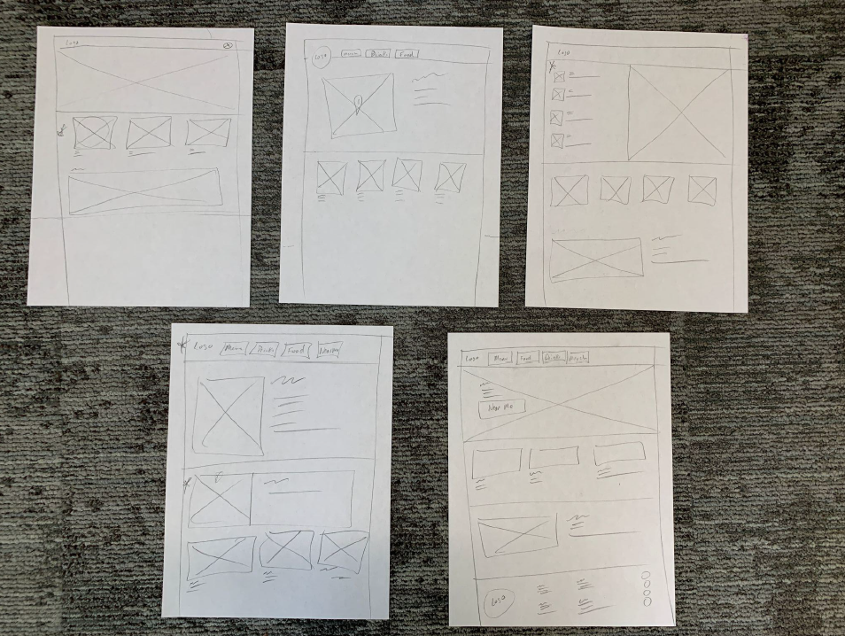
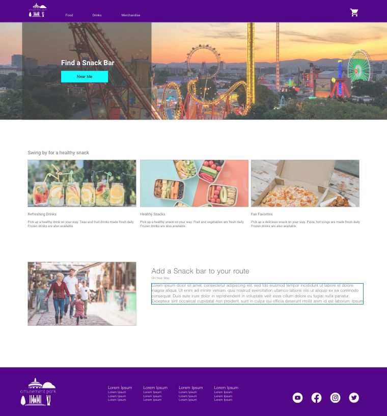

CASE STUDY
Snackbar Concept

Project Overview
The vendor is looking for a way to increase sales and improve the overall snack purchase experience.
The focus of this project is to design an easy way for users to look up snacks and merchandise availability by gift shop location and place an order ahead of time for pickup.
Project duration February 2023 - February 2023.
My role within this project is that of a Lead UX designer, UX Researcher, UX Tester and Developer.
| Tech Stack | Concept (not built) |
|---|---|
| Project Type | UX concept |
| Role | Lead UX Designer, UX Researcher, UX Tester, Developer |
| Completion Date | Feb 2023 |

Key Features
- So Busy: Visiting a snack bar location that's beyond busy was a common complaint — the design looks to ease that with an easier way to find alternate locations.
- Out of Merch: Walking all the way to a location to find out they are out of the merchandise you want — availability is surfaced ahead of time instead.
- Where's the Menu: Trying to see the menu while in line, then hurry and coordinate what everyone wants before reaching the front — solved by browsing the menu ahead.
- Where Is It: Having to circle back because you missed the nearest snack location — addressed with a “near me” feature.

Project Gallery



Design and Development Insights
As the sole researcher, designer, and tester on this concept, I worked from an unmoderated usability study through to hi-fidelity mockups.
User Research

An unmoderated usability study was conducted with 5 individuals. It was assumed users would be able to remember the locations of snack bars. Users where eager to use the near me feature to help locate the nearest snack bar location.
Pain Points
- So Busy: Visiting a snack bar location that's beyond busy.
- Out of Merch: Walking all the way to a location to find out they are out of the merchandise I want.
- Where's the Menu: Trying to see the menu while in line, then hurry and coordinate what everyone wants before reaching the front.
- Where is it: Having to circle back because we missed the nearest snack location.
Paper Wireframes
My focus was to make finding a snack bar prominent and also provide some area to showcase products or limited edition merchandise.
Digital Hi-fidelity Mockups
Hi-fidelity Mockups: The department was provided with reports to review and decide how edge cases were to be handled.

Lessons Learned & Future Improvements
Potential Impact
Updates to the design will help drive additional customers to nearby Snack shop locations, give them the option to order ahead and also advertise merchandise will they use the app to place their order. Tracking the number of pre-ordered items will be a great metric to measure that features success.
What I Learned
I learned there are more improvements that can be made to understanding accessibility and ensuring a great design experience for all users.
EXPLORE MORE
Continue through the portfolio.
Browse the complete project collection, or reach out if you would like to discuss the engineering and design decisions behind this work.